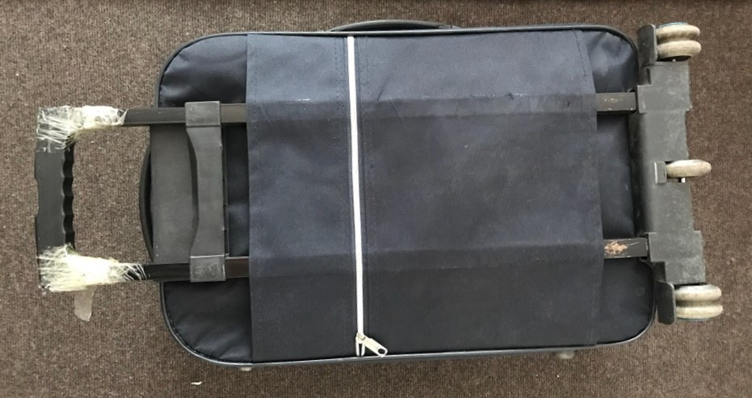
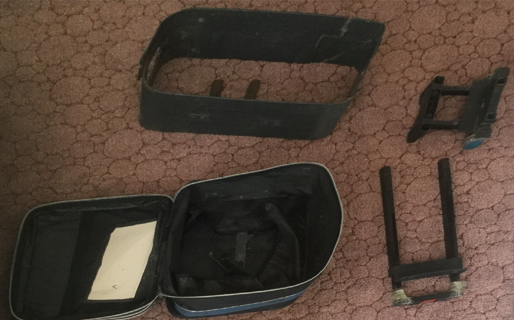
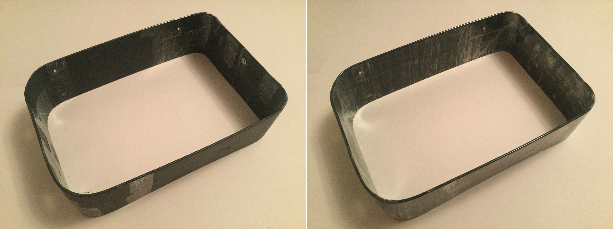
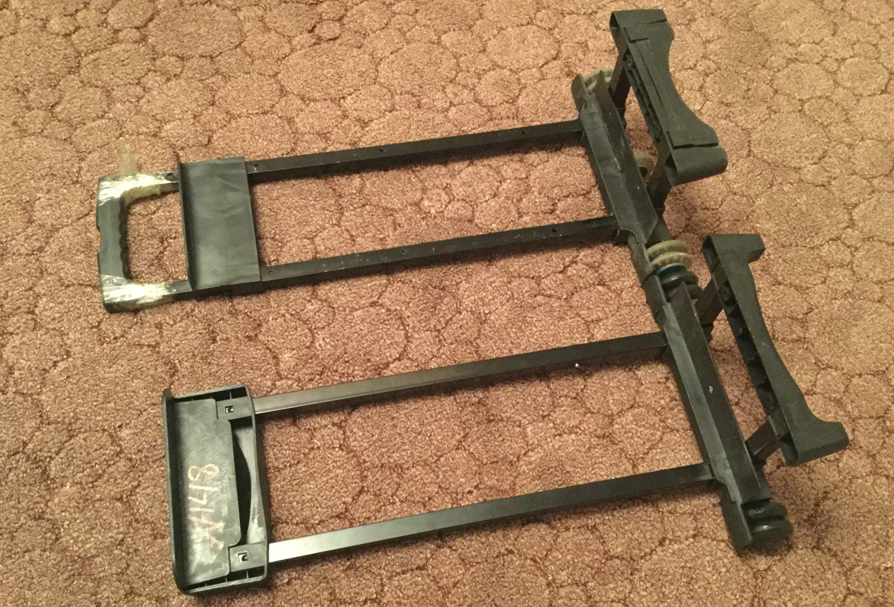
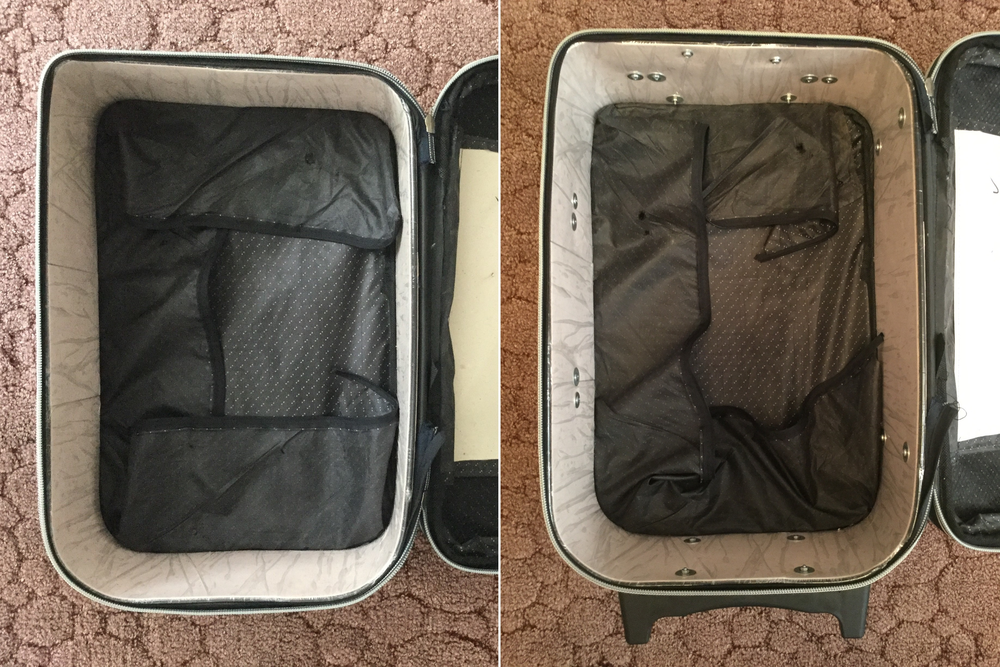
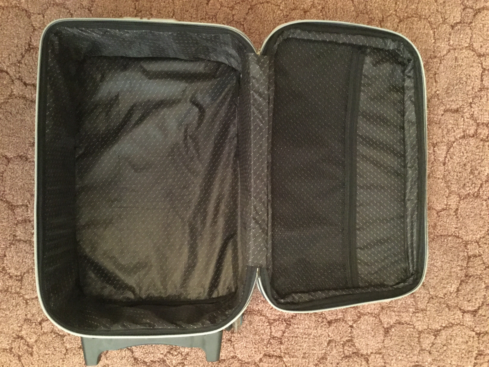
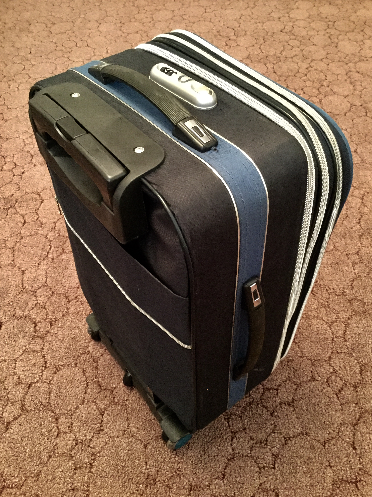

Этим летом (уже прошедшим, к сожалению) я летал в командировку. Чтобы привезти из тёплой страны горячие напитки, надо было лететь с чемоданом, а так как своего не было, я попросил у знакомых.
Такси, аэропорт, самолёт, такси, гостиница. Поработав и отдохнув, я собрался обратно, но по пути к автобусу ручка перегруженного чемодана не выдержала и отломилась от металлических стоек. Тогда я вернул её назад с помощью скотча, которым поделился водитель. Спустя несколько часов грузчики в аэропорту ещё немного «помогли» чемодану и, забрав его с ленты транспортёра, я обнаружил, что ручка достаётся с большим трудом.
Вот так выглядел страдалец по прибытии домой.
Какое-то время он просто стоял в шкафу, а мысль о починке (или покупке нового) витала в голове. Пару же дней назад хозяева чемодана сообщили, что скоро собираются в отпуск, и попросили его вернуть. Значит, пришло время принимать решение, и я решил починить чемодан. Это дольше по времени, но дешевле, веселее и есть повод сделать первый пост на Пикабу.
Быстрый поиск в интернете показал мне крутой магазин, где продаётся куча всего полезного, в том числе и телескопические ручки для чемоданов, туда я и направился за покупкой. Вернувшись, начал разбирать чемодан, и тут меня ждал сюрприз — укрепляющий бортик был разломан на кучу частей (хотя кусочек пластмассы, однажды найденный внутри, должен был мне намекнуть на такой вариант).
Пришлось разбирать весь чемодан. Тут же посмотрел как его ремонтировать. В самом первом видео на ютубе (кстати там почти такой же чемодан, что так же подтолкнуло меня к написанию этого поста) мастер заменил пластмассовый бортик на бортик из металлического листа. Такое решение мне не понравилось, так как чемодан станет тяжелее и будет весь светиться на сканерах. Плюс не хотелось возиться с металлом. О том, как сделал я — рассказ ниже.
Вот как выглядел только что разобранный чемодан. Почему эта фотография настолько ужасна, я совершенно не знаю. На ней видны чехол, пластмассовый бортик, колёсики с ножками и телескопическая ручка. Со всем этим мне и придётся разбираться дальше.
Бортик, как я уже писал, был сломан, и на предыдущей фотографии сложен, как пазл. Ниже видно в каком состоянии он был на самом деле. При разборе я не ломал его, а аккуратно вытащил все части. На обоих больших кусках есть трещины, ещё немного, и они разломились бы совсем.

Пациент на хирургическом столе. Сначала скрепил все части кусочками скотча, затем обмотал бортик скотчем полностью, не оставляя зазоров и изгоняя пузырьки. Это нужно, чтобы укрепить имеющуюся конструкцию и избежать растрескивания в будущем. После всех операций бортик стал заметно крепче и не разваливается от прикосновений.
Использовать его в таком виде ещё нельзя, так как в пластмассе много вырванных кусочков и никакой нагрузки он не выдержит. Поэтому я стал укреплять бортик.
Для этого я разрезал хирургический стол на длинные полоски (стол на самом деле — это плотный картон толщиной 1,2 мм), их ширину я сделал на полсантиметра меньше, чем высота бортика. Полоски примотал тем же скотчем к бортику. Начинал с внутренней поверхности, потом сделал внешнюю. Изначально хотел две вместе, но это было бы неудобно. Длина полосок оказалась меньше, чем периметр бортика, пришлось делать вставки. На одной длинной стороне внутренняя, на другой — внешняя. На фото их не видно, но они есть.

Теперь бортик (даже борт) стал прочным, выдерживает падения, кидания, сгибания. Картон и скотч творят чудеса.
Пришло время заняться телескопической ручкой, с которой всё это и началось. Заодно посмотрю и колёса.
На фото родная и купленная ручки. Видно, что новая длиннее, а значит придётся её подрезать. Ножовка по металлу справилась за пять минут, но стоял ужасный скрежет от трубок.
Теперь очередь платформы с ножками и колёсами. Старые колёса твёрдые и шумят по асфальту, поэтому заменил их на новые резиновые. Основание оставил старое, так как на него возможно закрепить пятое колесо, а чемодану оно, в отличие от телеги, не помешает. Ось также осталась старая, а вот ножки новые, так как более симпатичные. Всё мою, чищу, смазываю и собираю — металлический Франкенштейн готов.

На последнем фото видно, что крайние колёса пришлось оставить старыми. Потому что при сборке выяснилось, что толщина новых колёс чуть больше и закрепить их на оси не получается.
Вставить бортик в чехол было самым трудным моментом. Насколько я понимаю, на заводе его вставляют в разрезанном виде, а только потом соединяют. Но четыре руки и настойчивость помогают добиться успеха. Можно заметить, что бортик вставлен вверх ногами. Это нужно для того, чтобы в тех местах, куда будут крепиться элементы чемодана, была целая пластмасса. Немного изменилась геометрия и чехол кое-где излишне натянулся, но это не критично.
Теперь просверливаю отверстия, ориентируясь на дырочки в ткани; прикручиваю телескопическую ручку, колёса, ручки для носки, ножки и кодовый замок. Сложностей не было, но из-за двух слоёв картона увеличилась толщина бортика, поэтому некоторые винты пришлось взять длиннее. Плюс поставил шайбы в местах крепления кодового замка и ножек — с завода их не было.
Тщательно пропылесосил чемодан от мелких стружек. Если этого не сделать, они будут понемногу выпадать и оставаться на вещах. Застёгиваю подкладку на молнию и прикручиваю картонную панельку, которая закрывает стык крышки чемодана и основной его части.
Всё, чемодан готов. На всю работу, исключая перерывы, ушло около четырёх часов.
Вот какой получился чемодан: он не потяжелел, но окреп и прослужит ещё много лет. Покупная телескопическая ручка подошла почти идеально. Ручка для носки и кодовый замок сдвинуты, чтобы быть посередине корпуса, несмотря на изменившееся натяжение чехла на бортик. Выглядит почти как новый.
Осталось вернуть чемодан хозяевам, чтобы они спокойно улетели на отдых, а заодно провели его тест-драйв (краш-тест?).
Всем хорошего вечера и надёжных чемоданов!